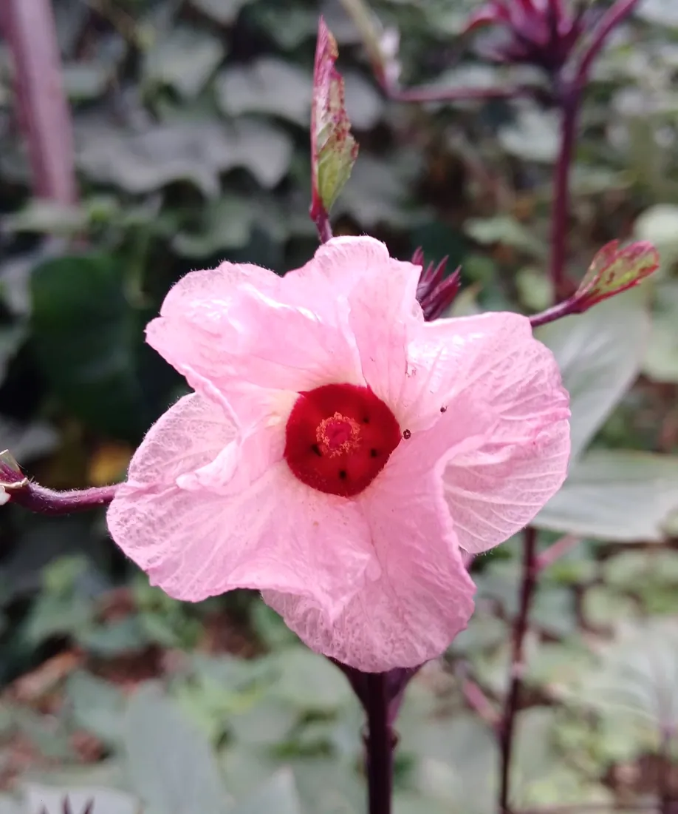
1La fleurRose tendre, cœur rouge : la plante d'hibiscus sabdariffa en pleine floraison.
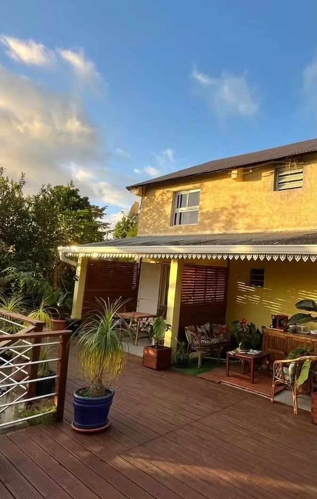
Chambres d'hôtes · Le Guillaume, Saint-Paul
Sur la route qui mène au piton Maïdo (2896 m) : profitez du calme, de la nature, pour randonner ou vous reposer tout simplement.
Bienvenue au Guillaume
Lé…Fé Coco, ce sont des chambres d'hôtes avec sanitaires privés, au Guillaume, dans les hauts de Saint-Paul. Une maison jaune, une grande terrasse en bois, des palmiers et des plantes partout : l'endroit idéal pour souffler, vous ressourcer et profiter de l'air frais.
« Besoin de souffler, de vous ressourcer ou de profiter du calme des hauts ? À Lé…Fé Coco, laissez le temps ralentir… »
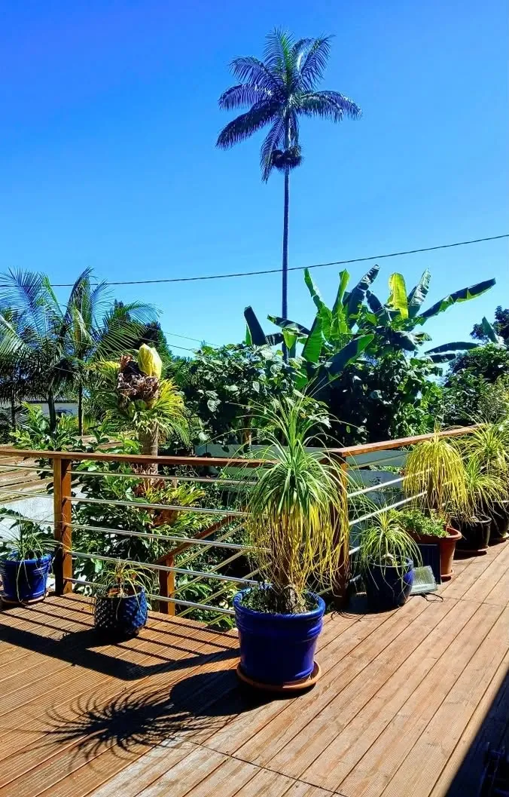
Les chambres
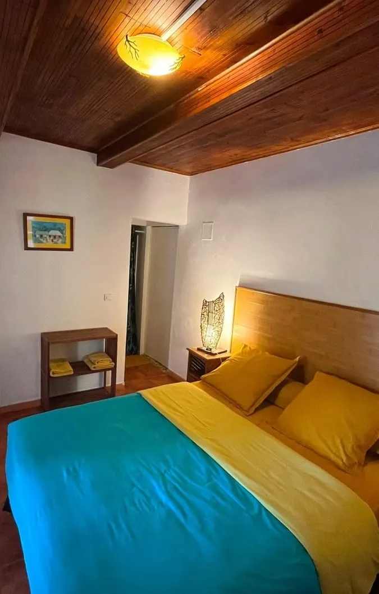
Paiement par chèque, espèces ou virement.
Table d'hôtes & terrasse
Chambres confortables, table d'hôtes aux saveurs péi, nature, fraîcheur et authenticité : chez Lé…Fé Coco, on vient se détendre, partager un bon repas et créer de beaux souvenirs, dans une ambiance conviviale comme à la maison.
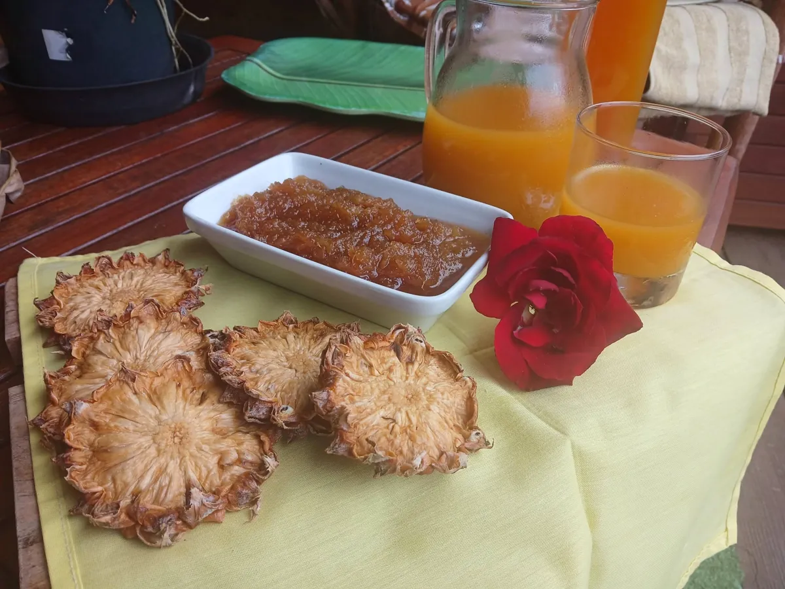
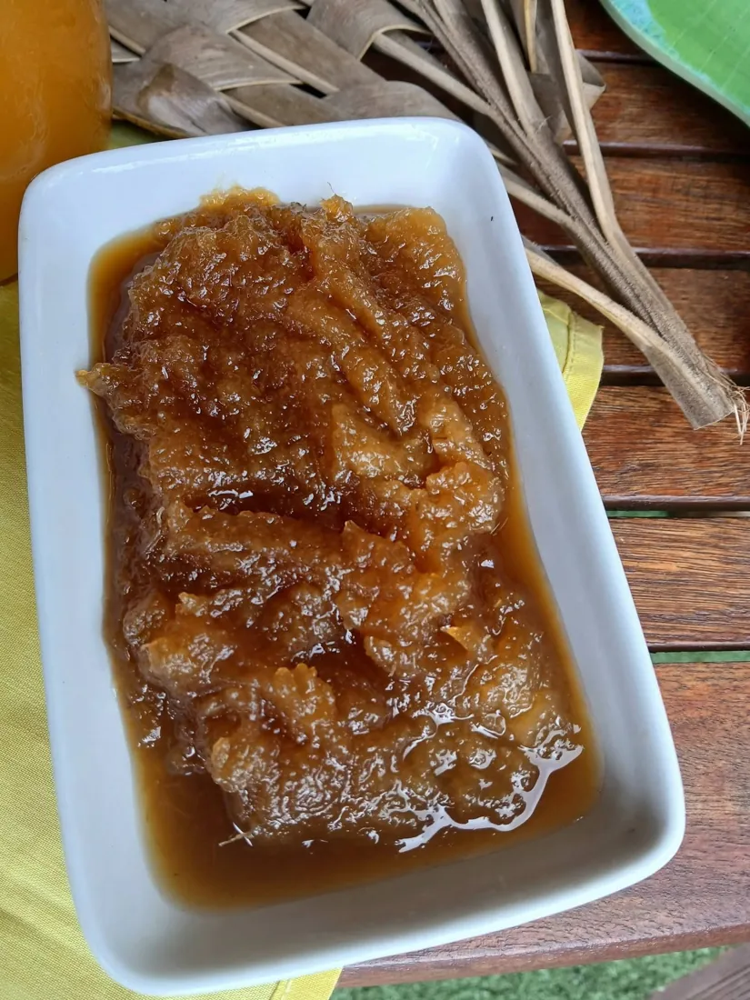
Le projet de la maison
Planter, récolter, faire sécher : de la fleur rose aux calices rouge profond, Lé…Fé Coco a mené son propre projet bissap, ici au Guillaume.

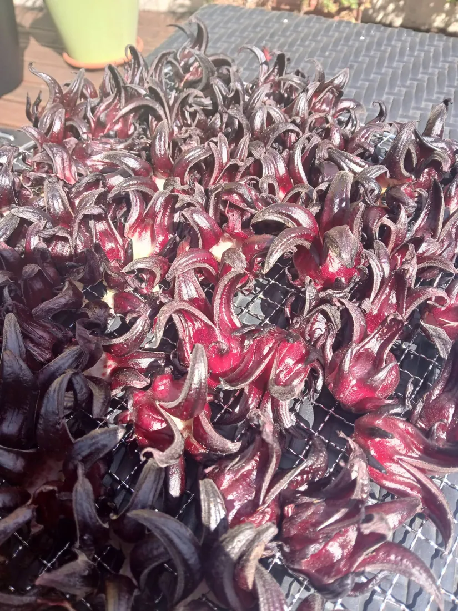
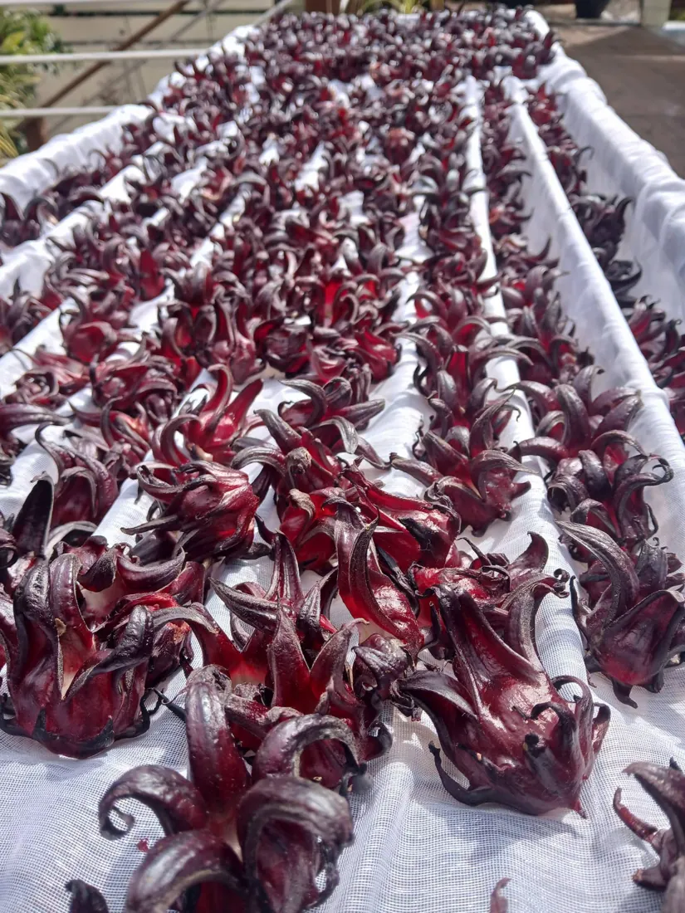
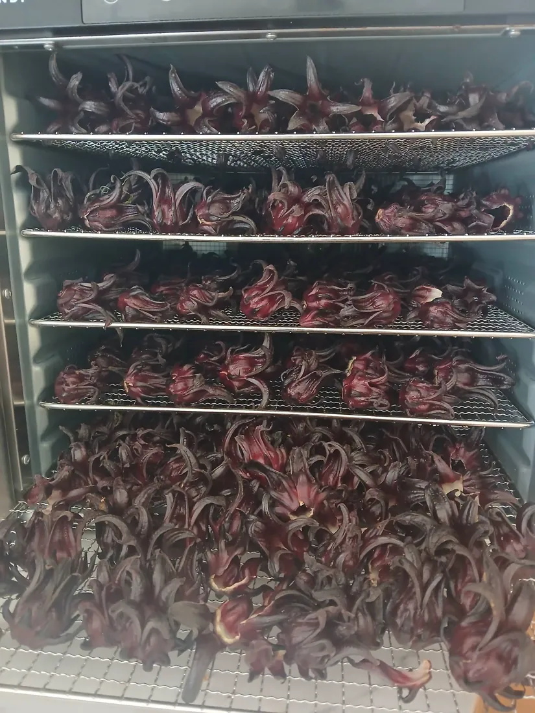
← faites glisser →
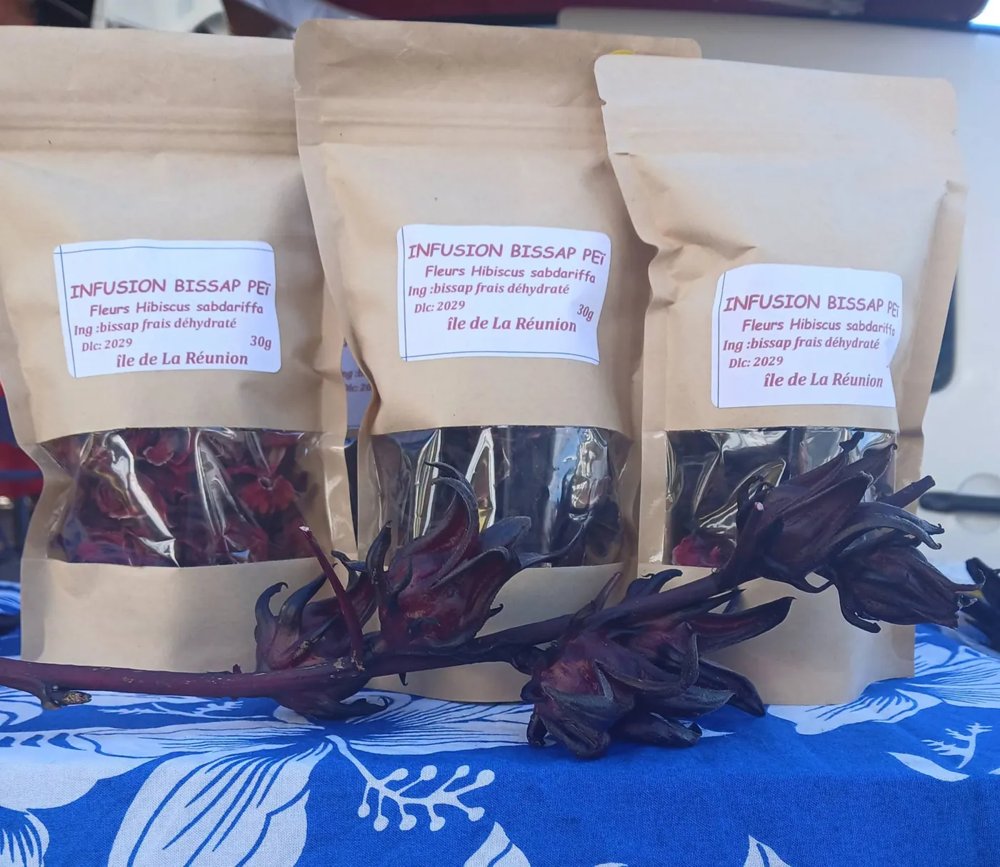
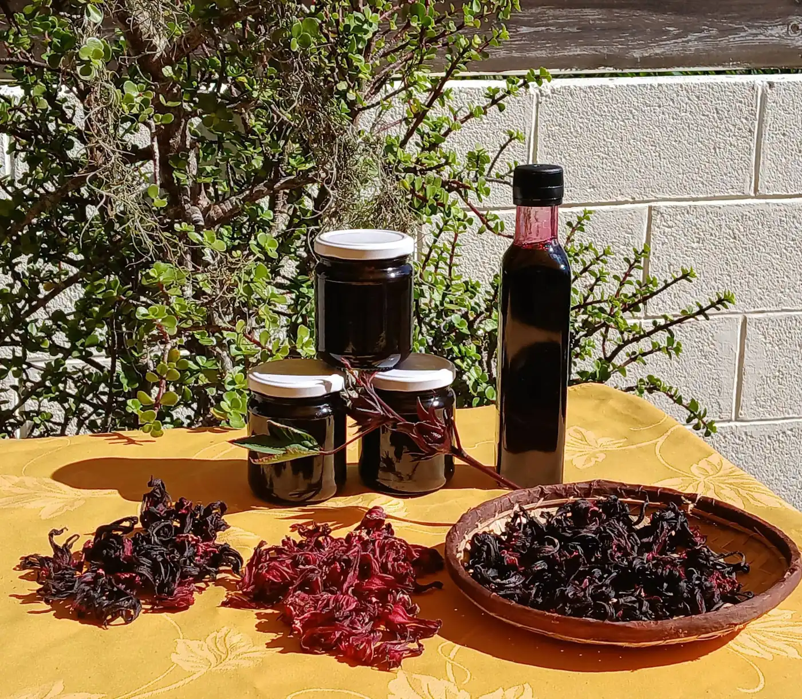
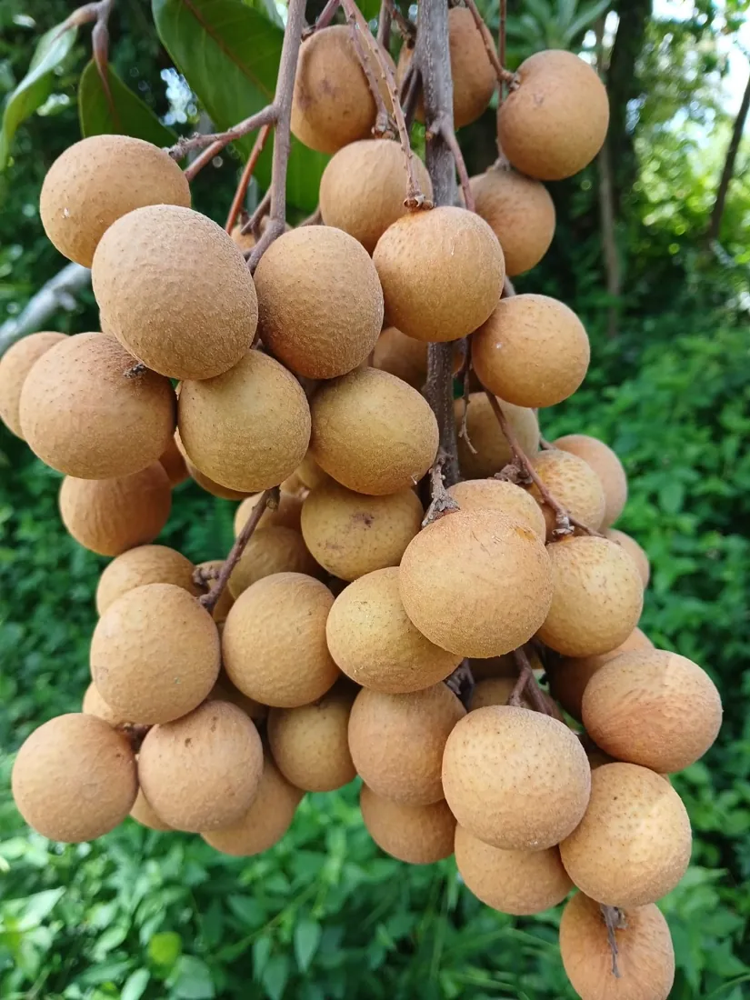
Au fil des saisons
« …alors vient goûte longani et profite d'un bon moment à Lé…Fé Coco. » Envie de calme, de nature et d'air frais ? Les chambres d'hôtes de Lé…Fé Coco vous attendent dans la fraîcheur des hauts.
Publication du 5 mars 2026
Ils sont venus bat un karé
Titres d'avis publiés sur la fiche reunion.fr de Lé…Fé Coco.
Offrir pour Noël
Une chambre au calme, le petit-déjeuner sur la terrasse et la route du Maïdo au réveil : un cadeau qui se vit, pour vos parents, vos amis ou votre amoureux.
Écrivez à Lé…Fé Coco sur WhatsApp : on prépare ensemble le séjour à offrir, au nom de la personne que vous gâtez.
Offrir une nuitVenir au Guillaume
Un message, un appel, et on vous attend sur la terrasse.